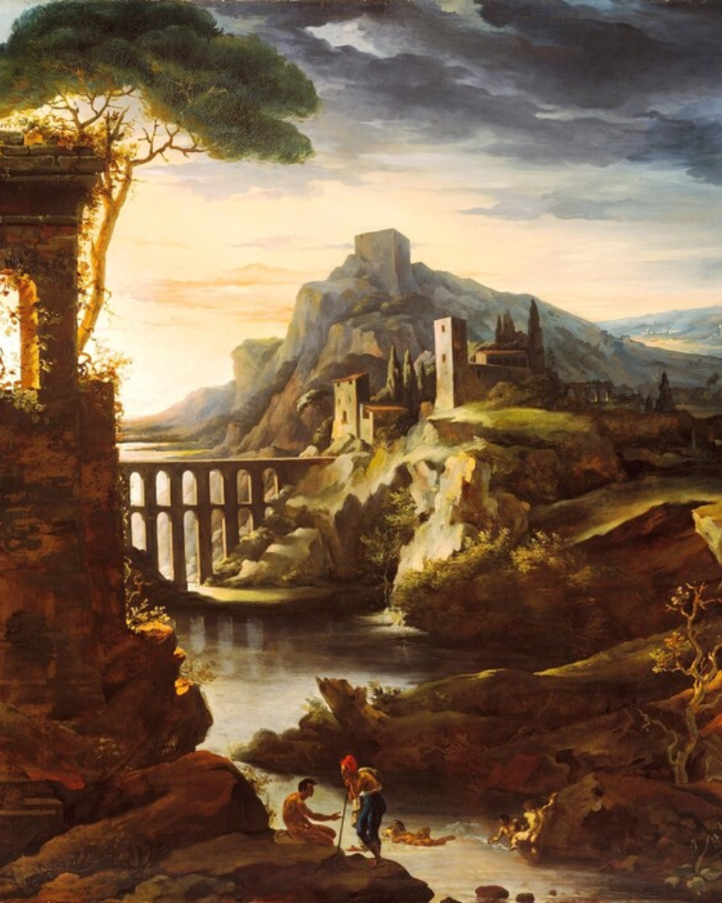
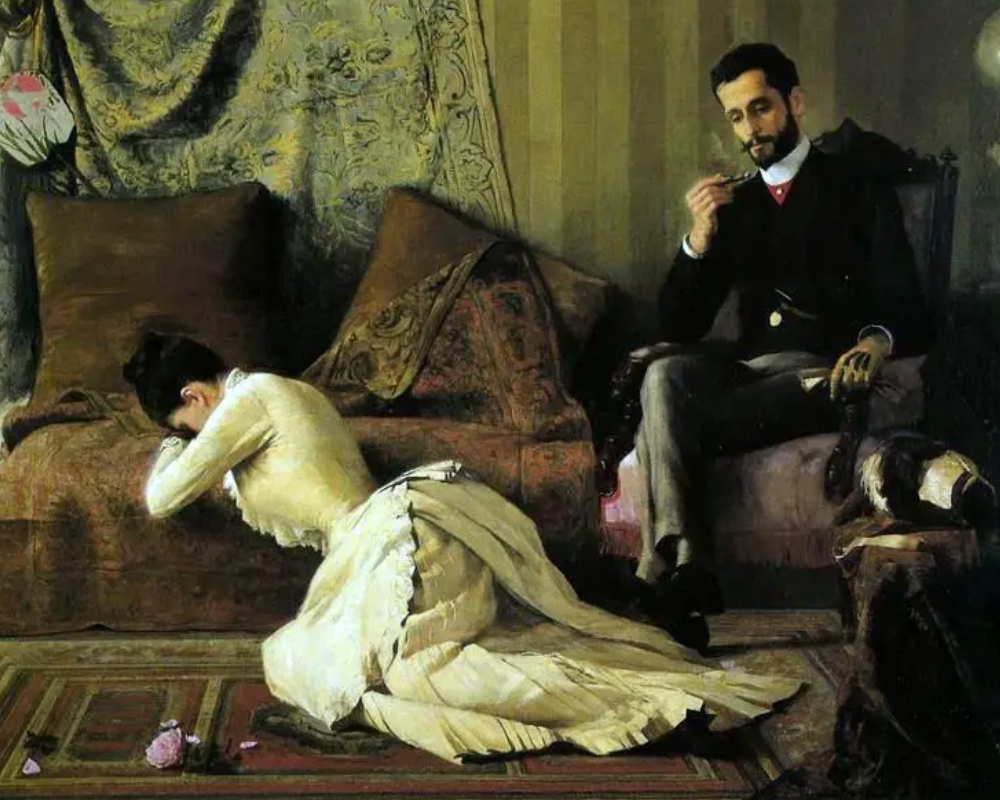
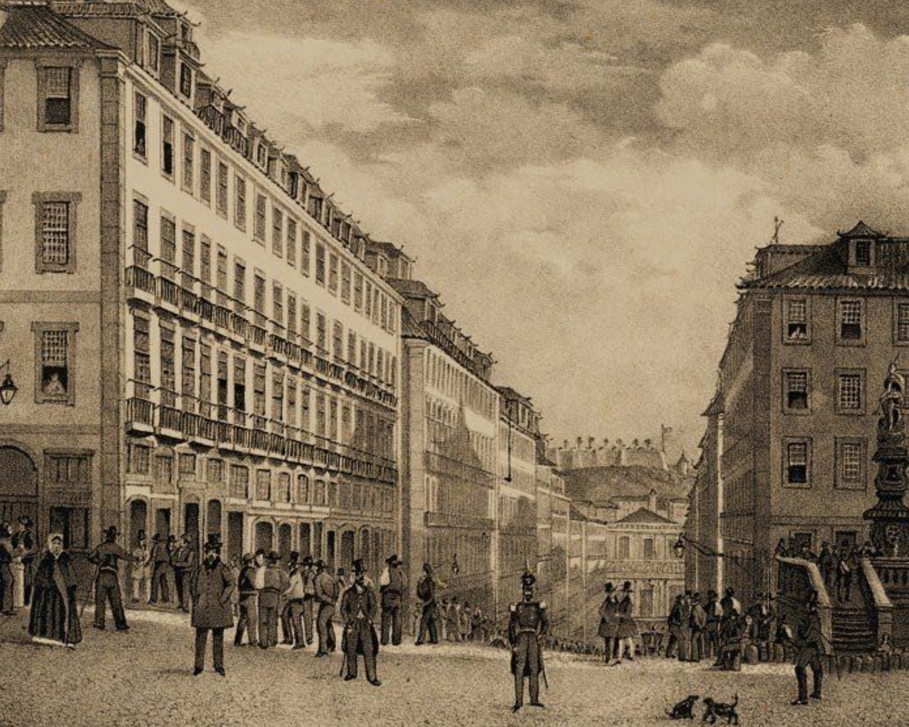
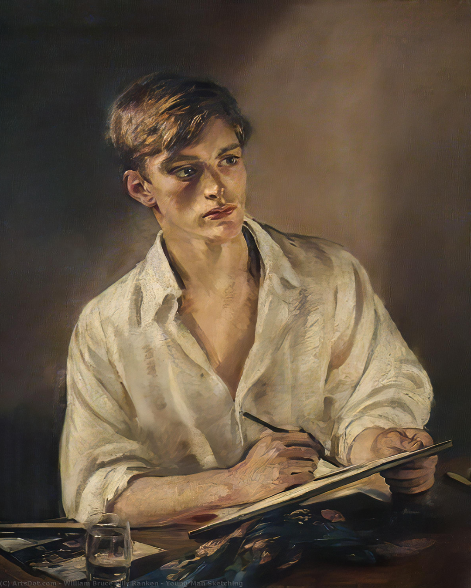
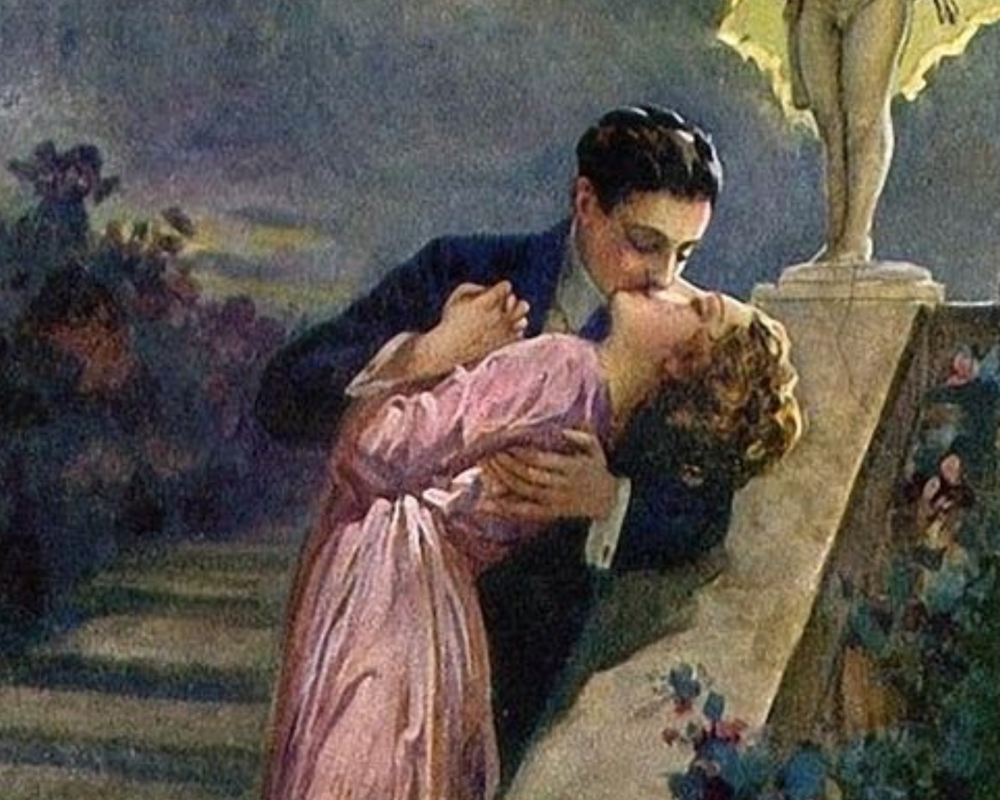

https://aoutrameninabennet.blogs.sapo.pt/a-morgadinha-dos-canaviais-julio-dinis-63441
https://www.infopedia.pt/apoio/artigos/$a-morgadinha-dos-canaviais
https://www.skoob.com.br/livro/resenhas/47746/recentes/

O livro “A Mogardinha dos Canaviais”, tem sua história desenvolvida na metade do século XX,
em uma aldeia minhota de Portugal. A trama se dá quando o rico órfão, Henrique de Souselas
adoece diante da sensação de inutilidade da vida urbana e foge para o campo, instalando-se
na casa de sua tia, Doroteia. Lá, Henrique conhece a elegante e inteligente morgadinha,
Madalena, por quem se apaixona.
Entretanto, esse sentimento torna-se um incomodo para Madalena, que não retribui o
sentimento, e para Augusto, que o vê como um rival. Tempos depois, em um dos desencontros
da vida, Henrique entra em uma briga e é levado para se recuperar na casa da Morgadinha,
onde recebe os cuidados de Cristina, prima de Madalena, por quem acaba se apaixonando.
Por fim, Henrique casa-se com Cristina e Madalena descobre que também nutre sentimentos
por Augusto, casando-se com ele.
Augusto é retratado como um jovem nobre de coração nobre, gentil, sensível, romântico e dedicado. Sua personalidade encantadora e suas atitudes altruístas contribuem para torná-lo um personagem cativante na trama de "A Morgadinha dos Canaviais".
Cristina é prima de Madalena Almeida de Mesquita, a protagonista feminina do romance. Elas compartilham uma forte amizade e são confidentes uma da outra. Cristina é retratada como uma pessoa leal, confiável e afetuosa, sempre presente para apoiar Madalena em momentos difíceis.
Órfão rico residente em Lisboa, que se encontra doente devido à vida urbana. Ele é descrito como um rapaz elegante, de boa aparência e pertencente à alta sociedade. Henrique é conhecido por seu charme e habilidade em conquistar a atenção das pessoas ao seu redor. É um jovem aristocrata charmoso, porém, superficial e ambíguo em suas relações amorosas. Sua presença na história contribui para o desenvolvimento da trama e para a exploração das dinâmicas sociais e emocionais dos personagens.
Madalena é retratada como uma jovem mulher encantadora, doce e carinhosa. Ela é descrita como sendo de aparência atraente e com uma personalidade afetuosa. Representa a visão sensata e os valores tradicionais da sociedade da época. Sua presença traz estabilidade emocional aos personagens. Madalena é retratada como uma personagem feminina amável, atenciosa e de grande importância emocional no contexto do romance.
Ele é descrito como um homem de sabedoria e experiência, com uma reputação impecável. Sua posição social e política é de destaque, e ele é conhecido por sua inteligência e perspicácia. Além disso, o Conselheiro Mesquita representa a tradição e a ordem estabelecida na sociedade retratada no romance.
Resenha
“A Morgadinha dos Canaviais” é um romance publicado inicialmente em 1868 escrito por
Júlio Dinis, que destaca a sociedade de Portugal no século XIX. O livro retrata o romance vivido por Henrique de Souselas, um homem que residia no território urbano e que a
mando do médico muda-se para o campo, a fim de conseguir melhorar seu estado de saúde.
Isso representado neste trecho, “Ora sucedeu que nesse mesmo dia recebesse Henrique um presente de fruta de
uma sua tia, santa criatura que ele, desde criança, não tornara a ver. Vivia regalada em uma aldeia sertaneja
do Minho, onde na idade de cinco anos Henrique passara alguns meses na companhia de sua mãe”.
Dessa forma, ao se mudar para casa de sua tia, conhece a família Mosteiro, e tem seu primeiro contato com
Madalena, “a Morgadinha dos canaviais” - uma mulher elegante, enérgica e inteligente. Henrique se apaixona
por Madalena, entretanto, não tem seu amor correspondido, tornando-se um incômodo para Augusto, professor
pobre e honesto que escondia seu amor por Madalena. No decorrer da história, Henrique conhece Cristina por
quem veio a se apaixonar e casar-se, deixando espaço para que Madalena ficasse com Augusto.
Ao ler a obra, é possível ver como o autor utiliza de aspectos como a vida campestre, rústica, ser uma forma
de local restaurador para Henrique, um morador da vida urbana. Não posso me esquecer de destacar um certo fanatismo religioso, que reflete a forma que a religiosidade se
aplicava na população local. Além disso, a questão da efetivação da lei em que era proibido o enterro de
pessoas nas Igrejas, mas sim que fossem enterrados e sepultados nos cemitérios.
Na obra, também se observa críticas ao clero e a sua hipocrisia; isso fica expresso numa escolha de palavras
apuradas e descrições minuciosas. Em "A Morgadinha dos Canaviais" e em outras obras literárias, o clericalismo
hipócrita pode ser retratado por meio de personagens clérigos que se mostram piedosos e devotos publicamente,
mas cujas ações privadas revelam um caráter corrupto, interesseiro ou desonesto. Esses personagens podem
utilizar sua influência e posição de autoridade dentro da Igreja para obter benefícios pessoais, exercendo
pressão sobre os fiéis ou explorando sua fé em busca de vantagens, algo que se conecta com a realidade
contemporânea. Na obra em questão, um acontecimento que comprova este acontecimento, é a fala do Papa
Francisco, em que ele cita “Há bispos e padres que usam batina, mas vivem uma grande hipocrisia”.
Como me referi antes, a história se passa na vida campestre, lugar em que o próprio autor teve contato,
e que serviu de inspiração para a criação da obra. Dessa forma, temos uma narrativa fiel e realista da
forma de vida simples que levava aquela sociedade.
“A Morgadinha dos Canaviais" é considerada uma das obras mais importantes da literatura portuguesa
do século XIX. O romance combina elementos românticos e realistas, proporcionando ao leitor uma visão
vívida da sociedade da época, seus costumes e valores.
Henrique
Vilarejo em Lisboa
Henrique e Madalena
Madalena
Edição do livro
Lisboa
Cristina
Augusto
Henrique e Cristina
A obra tem como características a imagem do clero como pessoas que buscavam se aproveitar de seus benefícios além
também de mostrar como era a cultura da população
Portanto, a resposta correta é a alternativa A.
Como citado acima, o autor tinha em comum em suas obras o campo como forma de melhorar a vida das pessoas, para que elas se
encontrassem, isso pode ser exemplificado pelo fato de Henrique ter se mudado para a vida rural.
Portanto, a resposta correta é a alternativa C.
Madalena, a Morgadinha, e a sua prima Cristina representam mulheres fortes, femininas e virtuosas, dispostas a contornar as barreiras sociais por amor
https://aoutrameninabennet.blogs.sapo.pt/a-morgadinha-dos-canaviais-julio-dinis-63441
https://www.infopedia.pt/apoio/artigos/$a-morgadinha-dos-canaviais
https://www.skoob.com.br/livro/resenhas/47746/recentes/